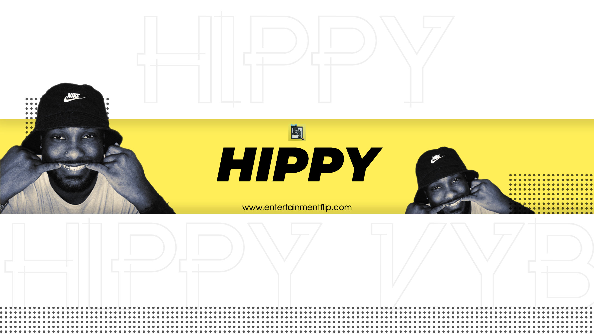

Artist Spotlight: Hippy - Bringing Soulful Music to the World

Hippy Vybez, known simply as "Hippy," is an artist with a profound passion for music and an innate ability to connect with audiences through his soulful tunes. His journey into the world of entertainment was inspired by a desire to express the full spectrum of human emotions, believing that no matter how good, bad, or ugly life may get, there's someone out there who can resonate with your experiences. For Hippy, music is not just a form of self-expression; it's a medium through which he touches the hearts of his listeners.
One of Hippy's significant achievements is earning a degree in the science of music production. This educational milestone was not just about acquiring knowledge but about elevating what he can bring to the table as a singer and songwriter. It reflects his dedication to constantly improving his craft and delivering music that resonates with authenticity. A defining moment in Hippy's artistic journey occurred when he took the stage for the first time in Oklahoma City. The energy was electrifying, and the crowd was hyped. As all the artists performed, the promoter approached Hippy and commended him for being the most prepared and for having excellent crowd control and music to back it up. Such praise during his debut performance only fueled his determination to become even greater in the future.
Hippy's music falls into the realm of trapsoul/R&B, a genre that blends elements of trap and R&B while bringing a fresh perspective to song structure. Rather than adhering to the conventional hook-chorus-hook formula, Hippy goes with the flow of the track, resulting in non-traditional yet captivating song structures that resonate with his unique style.
Hippy Vybez has exciting projects in the pipeline for his fans. He is set to release his album titled "Nightfall," which revolves around a story of lovers falling deeper in love with each moonrise. The album features soulful love songs and other tracks that touch on various genres and themes, from rap to pure joy and positivity.
The album's first single, "Nightfall," is already available on all major platforms. Hippy also has plans to release a video for "3AM," a song from the album, followed by another video for the upcoming single, "Water."
Hippy draws inspiration from a diverse range of artists, including Brent Faiyaz, Drake, Tory Lanez, and YG. These artists serve as emotional touchpoints for Hippy, guiding his musical journey. While he doesn't believe he sounds like any other artist, these influences provide him with a starting point and a unique perspective on how to approach his music.
In addition to his music career, Hippy Vybez leads a multifaceted life. He balances his artistic pursuits with a 9-5 job, which he proudly acknowledges. Hippy understands the importance of financial stability to invest in his music career and believes that success requires dedication, even when juggling multiple responsibilities. Hippy dedicates a minimum of 2-4 hours daily to his music, whether it involves writing, creating beats, or freestyling to random YouTube beats. Consistency is key, and he understands that taking breaks can lead to a loss of skills, just like in sports.
One of the main challenges Hippy faced in his career was the fierce competition in the music industry. With over a million songs being released daily, the landscape is highly competitive. However, Hippy's philosophy is that success can happen overnight; you just don't know which night it will be. Staying consistent and unwavering in pursuit of his ultimate dream keeps him motivated.
Beyond his music and his 9-5 job, Hippy Vybez is a big sports enthusiast. He also coaches high school football, highlighting his commitment to his passions both in and outside the realm of music. And let's not forget video games; they find a place in his life too. Hippy Vybez offers valuable advice to aspiring artists who are just embarking on their entertainment journey: "10,000 hours to become a professional at your craft. Once you hit that mark, give yourself another 10,000 hours. Never stop moving one foot in front of the other, and you will get to where you want to be."
For those looking to make their mark in music production and sound engineering, Hippy recommends exploring and learning on your own. You don't necessarily need a degree to be great at these skills. Find your way and develop your unique sound. To stay creatively inspired and motivated, Hippy Vybez focuses on consistently topping his previous work. He believes in being a better version of himself over time and competing with himself rather than others. The journey is a personal one, and self-improvement is his driving force.
Hippy embodies peace, love, and positivity through his music. His artistry speaks to the shared experiences and emotions that connect us all. In a world full of stories as vivid as his, Hippy Vybez brings a unique voice to the music scene, and he's just getting started.
To stay updated on Hippy Vybez's latest releases, performances, and updates, be sure to follow him on his artistic journey.